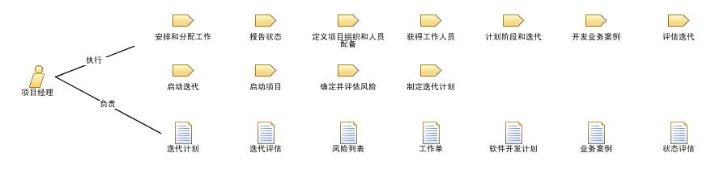

| 角色：项目经理 |
 |
|
关系
 |
|
| 修改 | |
|---|---|
| 流程使用情况 | |
主要描述
|
项目经理将项目管理知识、技能、工具和技术广泛应用于各种任务，以满足需求并交付特定项目的最终结果。 |
人员配备
| 技能 |
要胜任项目经理角色，建议您具备以下技能：
|
|---|---|
| 分配方法 |
对于较小的项目，一个人可兼任项目经理和开发角色（例如软件设计人员）。 但是，如有可能，通常最好不要让项目经理承担开发职责，以确保管理职责方面的时间压力不会妨碍到开发任务，反之亦然。 项目经理角色通常可以与其他管理型角色成功地组合在一起，例如变更控制管理员、部署管理员和流程工程师。 项目经理可能需要对诸如收集项目状态信息、生成度量标准和准备报告之类的任务的支持。当为项目配备人员时，请考虑将支持人员包括在内，以帮助执行这些任务。 |
更多信息
| 概念 | |
|---|---|
| 白皮书 |
© Copyright IBM Corp. 1987, 2006. All Rights Reserved. |